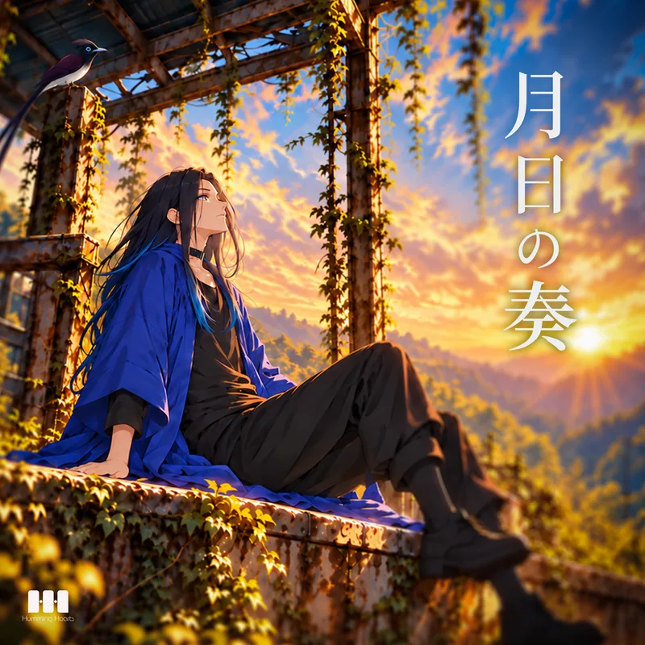
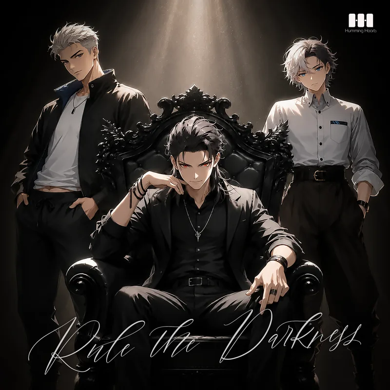

Release2026.10.16Lyrics & Music三条羽響月日の奏
Prisméa
Mood
Unit

Release2026.10.16Lyrics & Music三条羽響Prisméa

Release2026.09.25Lyrics烏丸蓮司Music筧傑Blackveil Harmonic
 Release2026.09.11Lyrics若本セインMusic三条羽響
Release2026.09.11Lyrics若本セインMusic三条羽響
Prisméa
 Release2026.08.22Lyrics & Music月嶺隼瞳
Release2026.08.22Lyrics & Music月嶺隼瞳
NocturnalFizz
 Release2026.08.12Lyrics川瀬帝翔Music燕谷航
Release2026.08.12Lyrics川瀬帝翔Music燕谷航
トリアティーク